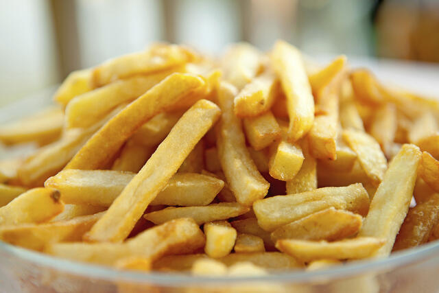

Papas Fritas
Receta de papas fritas caseras

Ingredientes
3 o 4 papas(300gr)
Aceite
Sal
Elaboracion (Pasos)
Pelar las papas.
Cortarlas en baston.
Calentar el aceite en un sarten.
Cocinar hasta que esten doradas.
Remorles el aceite y salar a gusto